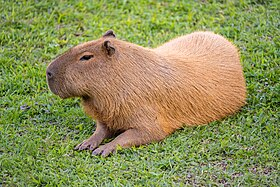
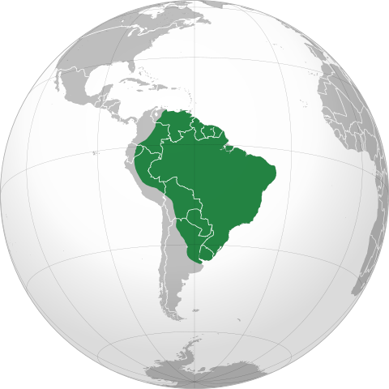

Capivara
Nome científico:(Hydrochoerus hydrochaeris Linnaeus, 1766)
Nome comum: Capivara.
Classificação biológica:
Domínio: Eukaryota.
Reino: Animalia.
Filo: Chordata.
Classe: Mammalia.
Ordem: Rodentia.
Família: Caviidae.
Gênero: Hydrochoerus.
Espécie: Hydrochoerus hydrochaeris.
Nutrição: Herbívoro.
Hábitos alimentares: Alimenta-se principalmente de gramíneas, plantas aquáticas e outras vegetações. Pode consumir cascas de árvores e frutas quando disponíveis.
Morfologia do corpo: É o maior roedor do mundo, com corpo robusto, pernas curtas e cabeça grande. Mede entre 1 e 1,3 metros de comprimento e pesa entre 30 e 80 kg. Possui pelagem densa e marrom-avermelhada.
Comportamento: Vive em grupos sociais de 10 a 20 indivíduos, liderados por um macho dominante. É um animal semiaquático, passando grande parte do tempo na água para se refrescar e escapar de predadores.
Principais Presas: Gramíneas, plantas aquáticas e vegetação variada.
Principais Predadores: Onças-pintadas, jacarés e grandes cobras, como a sucuri.
Locais habitados
Distribuição: Presente em todos os biomas brasileiros.
Habitat: Habita áreas próximas a rios, lagos, pântanos e outros corpos d'água. Prefere locais com vegetação abundante para alimentação e cobertura.
Reprodução: A reprodução ocorre durante o ano todo, com gestação de aproximadamente 150 dias. A fêmea dá à luz de 2 a 8 filhotes, que são amamentados por cerca de 16 semanas.